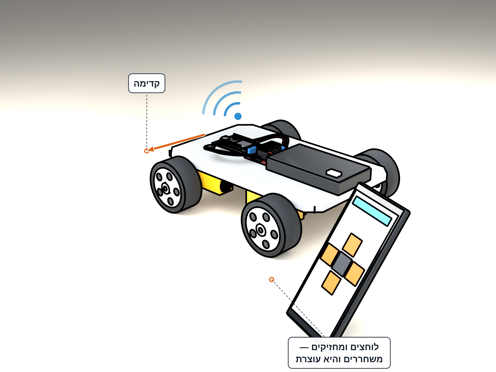

קודם באוויר, אחר כך על הרצפה — המכונית מצייתת לאצבע שלכם.
בודקים הכול באוויר לפני הרצפה — כך אם צד מסתובב הפוך רואים את זה מיד בלי שהמכונית בורחת.

מניחים את המכונית על קופסה כך שכל ארבעת הגלגלים באוויר. מחזיקים בדף הנהיגה את חץ למעלה — כל ארבעת הגלגלים מסתובבים קדימה. עוזבים — הכול עוצר.
אם אין קופסה — מחזיקים את המכונית ביד אחת באוויר ולוחצים ביד השנייה.
אם צד שלם מסתובב אחורה — זה תקין, לא תקלה. מכבים את מתג הסוללות, מחליפים בין שני החוטים של הצד הזה בהדקי בקר המנועים — בצד שמאל OUT1 עם OUT2, בצד ימין OUT3 עם OUT4 — מדליקים ובודקים שוב.
מנסים באוויר כל כפתור בדף הנהיגה: אחורה, סיבוב שמאלה, סיבוב ימינה ועצירה. אחרי כל כפתור עוזבים ורואים שהכול עוצר.
One side spins backward? Swap that side's two wires: Left side: OUT1 <──> OUT2 Right side: OUT3 <──> OUT4 Swap at the screw terminals, then test again.
מחליפים רק בין שני החוטים של הצד שהסתובב הפוך — הצד השני נשאר כמו שהוא.
מניחים את המכונית על הרצפה באזור פתוח — רחוק משולחנות, מתיקים ומרגליים.
נוסעים לאט — מתחילים בלחיצות קצרות על חץ למעלה. עוזבים — והמכונית עוצרת. השחרור הוא תמיד העצירה.
לחיצה קצרה = תזוזה קצרה. ככה לומדים לשלוט במכונית בלי להתנגש.
מתאמנים על שני תרגילים: נסיעה בקו ישר ופנייה אחת.
המכונית נוסעת לאן שהאצבע מחזיקה ועוצרת ברגע שעוזבים.
CAR-01.